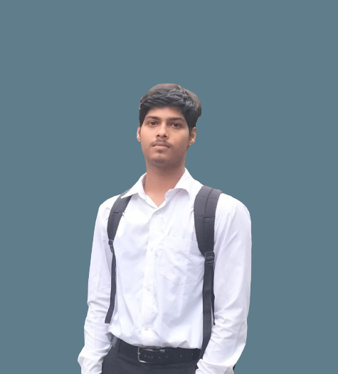

Hello, I'm
Rupesh Pradhan
Rupesh Pradhan
About Me!
I am from Jamshedpur, Jharkhand. Currently I am pursuing my Bachelor of Technology Degree in the branch of Computer Science and Engineering from Veer Surendra Sai University of Technology, burla. Formerly known as University college of Engineering, burla. My hobbies are playing cricket and reading articles. My aim is to become a Full Stack Web developer.

Frontend
Developer